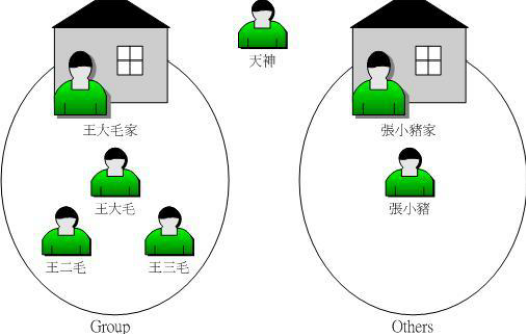
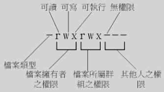
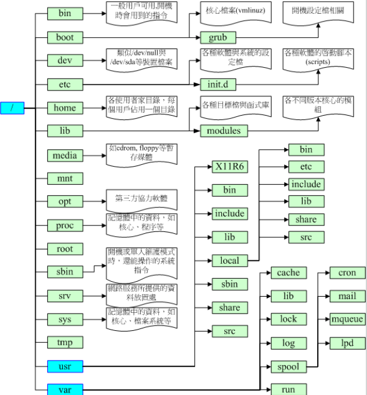

[TOC]
统计文件夹下文件的个数
ls -l | grep "^-" | wc -l
统计文件夹下目录的个数
ls -l | grep "^d" | wc -l
统计文件夹下文件个数，包括子文件
ls -lR | grep "^-" | wc -l
统计文件夹下目录个数，包括子目录
ls -lR | grep "^d" | wc -l
wc命令： (Word Count)功能为统计指定文件中的字节数、字数、行数，并将统计结果显示输出。
wc [-lcw]
-c 统计字节数 -l 统计行数 -m 统计字符数，此标志不能与-c标志一起使用 -w 统计字数。一个字定义为由空白、跳格或换行字符分隔的字符串
#!/bin/bash
# Grabs and kill a process from the pidlist that has the word myapp
pid=`ps aux | grep myapp | awk '{print $2}'`
kill -9 $pid
netstat -anp | grep portno 即：netstat –apn | grep 8080
其中最后一栏是 * PID/Program name *
查看磁盘使用情况 df -lh
查看目录的磁盘占用情况 du -sh * | sort -h
crontab
Ubuntu查看crontab运行日志
修改rsyslog文件，将/etc/rsyslog.d/50-default.conf 文件中的#cron.*前的#删掉； 重启rsyslog服务service rsyslog restart； 重启cron服务service cron restart
~\.ssh 目录；~\.ssh下，执行ssh-keygen -t rsa，生成私钥 id_rsa, 公钥 id_rsa.pub;id_rsa.pub 拷贝到 linux 的 ~/.ssh 目录下，改名为 authorized_keys；vi /etc/ssh/sshd_configRSAAuthentication yes # 是否允许用户自行使用成对的密钥系统进行登入行为 version 2
PubkeyAuthentication yes # 是否允许用户自行使用成对的密钥系统进行登入行为
AuthorizedKeysFile # 公钥数据路径 用户目录下 .ssh/authorized_keys
修改完成后， sudo systemctl restart sshd 重启ssh服务；
5. 登录服务器: ssh -i ~\.ssh\id_rsa gjh@10.19.12.12
linux下ssh客户端以及sftp文件传送的一般用法
以前在windows上，我要用ssh连接服务器，我一般都用putty。 这段时间一直在linux上工作，由于linux上一般都自带ssh客户端，也就是ssh命令了，此外还有一个命令sftp，用来安全的传送文件，今天为了管理linux服务器，用到了linux下的这两个命令行工具，现就其最常用的用法描述如下： 假定服务器ip为61.145.34.33，ssh服务的端口号为9186，服务器上有个用户为sshuser； 用ssh登录服务器的命令为： >ssh -l sshuser 61.145.34.33 -p 9186 回车后，如果是第一次登录，会提示你一条认证信息，你键入yes即可，接着输入服务器sshuser的密码登录即可；
用sftp登录服务器的命令为：
>sftp -oPort=9186 sshuser@61.145.34.33
回车后，输入服务器sshuser的密码登录，然后会显示一个sftp>的环境，这个时候，键入help你会看到所有命令的帮助，跟ftp命令行工具非常类似，比如get,put等等。
至于这两个命令行的其他用法，可参看其联机手册...
在终端下输入命令： export LANG=en_US xdg-user-dirs-gtk-update 这个时候会弹出一个配置界面，提示是否将中文目录切换为英文目录。选中不再提示，确定。系统会删除没有内容的中文目录，而有内容的目录会保持。并创建8个相应的英文目录如下：“Desktop”、“Download”、“Templates”、“Public”、“Documents”、“Music”、“Pictures”、“Videos”。此时，您在“位置”里看到的常用中文目录已经变成英文目录。只需要将原中文目录的内容拷贝到相应英文目录，并删除中文目录即可。 接下来再执行 export LANG=zh_CN.UTF-8 以显示中文。
OK，行了，三个命令就行。可就为一次改变要记三个命令，也麻烦。能不能不记啦。当然可以，那您注销，然后在登录界面选择语言种类为“English(united states)”，进入系统后你就发现整个系统都变成English了，同时还会弹出一个对话框提示是否切换用户目录，选择“Update names”，确认并再注销，在登录界面选择“汉语”，进入系统后事个系统又变成了Chinese了，同样会弹出同一个对话框，选择"Keep old names"。OK，大功告成，一个命令都不需要记，就可完成您想要的结果。
/boot 200M Linux的内核及引导系统程序所需要的文件，比如 vmlinuz initrd.img文件都位于这个目录中。在一般情况下，GRUB或LILO系统引导管理器也位于这个目录；启动撞在文件存放位置，如kernels，initrd，grub。
/ 100G 用于存储系统文件 /home 200G 用户工作目录；个人配置文件，如个人环境变量等；所有账号分配一个工作目录。 swap是内存的两倍
find . -name .gradle -exec rm -rf {} \;
find . -type f -exec ls -l {} \;
tar
-c: 建立压缩档案 -x：解压 -t：查看内容 -r：向压缩归档文件末尾追加文件 -u：更新原压缩包中的文件
这五个是独立的命令，压缩解压都要用到其中一个，可以和别的命令连用但只能用其中一个。下面的参数是根据需要在压缩或解压档案时可选的。
-z：有gzip属性的 -j：有bz2属性的 -Z：有compress属性的 -v：显示所有过程 -O：将文件解开到标准输出
下面的参数-f是必须的
-f: 使用档案名字，切记，这个参数是最后一个参数，后面只能接档案名。
压缩
tar –cvf jpg.tar *.jpg //将目录里所有jpg文件打包成tar.jpg
tar –czf jpg.tar.gz *.jpg //将目录里所有jpg文件打包成jpg.tar后，并且将其用gzip压缩，生成一个gzip压缩过的包，命名为jpg.tar.gz
tar –cjf jpg.tar.bz2 *.jpg //将目录里所有jpg文件打包成jpg.tar后，并且将其用bzip2压缩，生成一个bzip2压缩过的包，命名为jpg.tar.bz2
tar –cZf jpg.tar.Z *.jpg //将目录里所有jpg文件打包成jpg.tar后，并且将其用compress压缩，生成一个umcompress压缩过的包，命名为jpg.tar.Z
rar a jpg.rar *.jpg //rar格式的压缩，需要先下载rar for linux
zip jpg.zip *.jpg //zip格式的压缩，需要先下载zip for linux
解压
1、.tar 用 tar –xvf 解压 2、.gz 用 gzip -d或者gunzip 解压 3、.tar.gz和.tgz 用 tar –xzf 解压 4、.bz2 用 bzip2 -d或者用bunzip2 解压 5、.tar.bz2用tar –xjf 解压 6、.Z 用 uncompress 解压 7、.tar.Z 用tar –xZf 解压 8、.rar 用 unrar e解压 9、.zip 用 unzip 解压
该命令的一般形式为：nohup command &
如果使用nohup命令提交作业，那么在缺省情况下该作业的所有输出都被重定向到一个名为 nohup.out的文件中，除非另外指定了输出文件：
nohup command > myout.file 2>&1 &
在上面的例子中，输出被重定向到myout.file文件中。
使用 jobs 查看任务。
使用 fg %n 关闭。
1）进入超级用户模式。也就是输入"su -",系统会让你输入超级用户密码，输入密码后就进入了超级用户模式。（当然，你也可以直接用root用） 2）添加文件的写权限。也就是输入命令"chmod u+w /etc/sudoers"。 3）编辑/etc/sudoers文件。也就是输入命令"vim /etc/sudoers",输入"i"进入编辑模式，找到这一 行："root ALL=(ALL) ALL"在起下面添加"xxx ALL=(ALL) ALL"(这里的xxx是你的用户名)，然后保存（就是先按一 下Esc键，然后输入":wq"）退出。 4）撤销文件的写权限。也就是输入命令"chmod u-w /etc/sudoers"。

帐号 --> /etc/passwd 密码 --> /etc/shadow group --> /etc/group

系统默认语系 --> /etc/sysconfig/i18n
改变文件属怅不权限
r:4 w:2 x:1
chmod 777 .bashrc
chmod u/g/o/a +/-/= rwx filename/dir
chmod u=rwx,go=rx .bashrc
将权限去掉而保留已存在的权限？如：要拿掉全部人的可执行权限
chmod a-x .bashrc

http://www.isstudy.com/linux/4123.html
chown [-R] 账户名称：用户组名称、文件或目录
参数： -R ：进行递归的持续更改，即将同子目录下的所有文件、目录都更新问这个用户组。通常用在更改某一目录的情况。 范例：
[root@linux ~]#chown bin install.log
[root@linux ~]#ls –l
-rw-r--r-- 1 bin users 24343 Jun 23 08:33 install.log
[root@linux ~]#chown root:root install.log
[root@linux ~]#ls -l
-rw-r--r-- 1 root root 24343 Jun 23 08:33 install.log